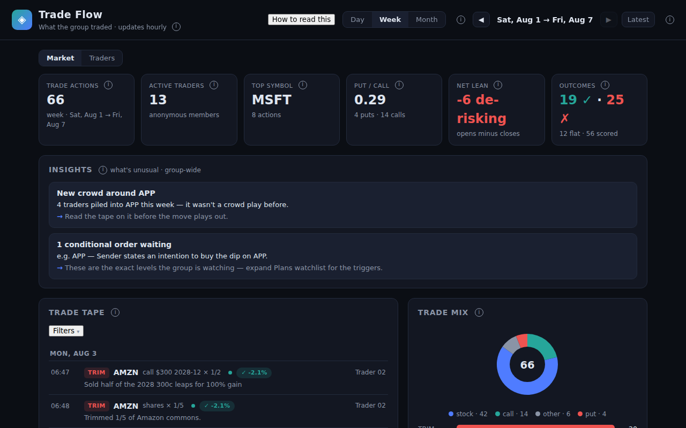
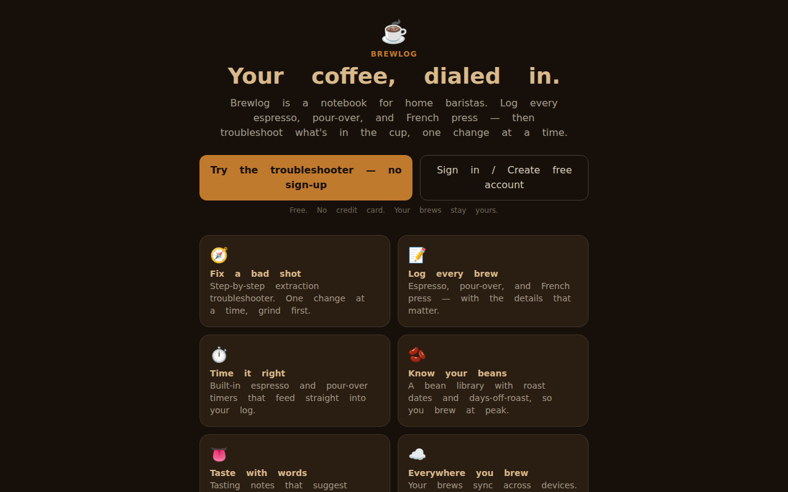
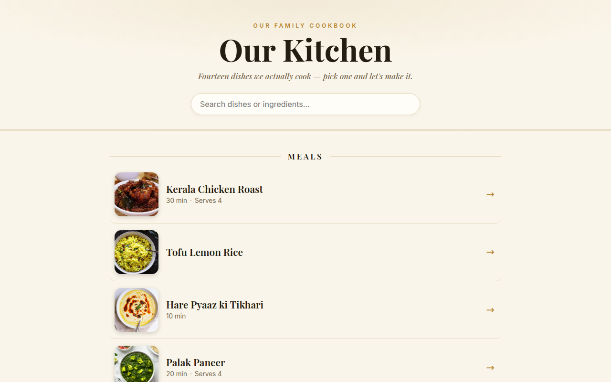
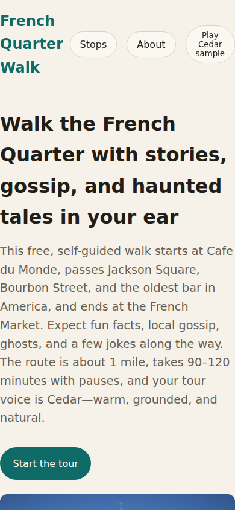
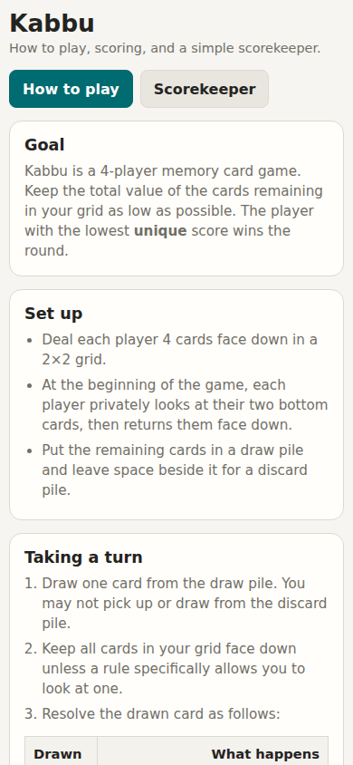

Portfolio · Updated September 2026
Vibhor Tayal — portfolio of projects
“The only clue to what man can do is what man has done.”
— R.G. Collingwood
I take that literally. So no promises about what I could build — just what I’ve actually built. I’m Vibhor: 15+ years building financial and telecom software. On the side I build fun projects, and I’m always open to collaborating on the next one.
Selected work Projects
Khelo Live
Tournament management from your phone: organizers set up tournaments in minutes, players join from a link, mark availability, report scores courtside, and earn DUPR-style ratings. Live standings, knockout brackets, public leaderboards.
Open the app →Coding Factory Building
Coding Factory is my two-agent build team.
I connected two AI collaborators so they could exchange work directly while I watched and steered. This diary follows the experiment one day at a time: what worked, what failed, and what I learned.
To make the exchange work I built Mission Control — live message stream, steering commands, review queue — the instrument I use to watch and steer both agents.
Read the diary →Trade Flow Live
My WhatsApp trading group, turned into a scoreboard. A linked-device reader pulls new messages hourly, a language model extracts the trades, and market data grades each one over five trading days. Fully anonymized, open source.

Brewlog Live
A coffee app for home baristas: bean library, brew timer, and a troubleshooter that tells you why your cup is off — freshness first, then grind. Built in a day.

Open the app →Home Recipes Live
Our family recipes on the web: searchable, tagged, with video embeds. The editor does on-device photo OCR plus AI cleanup, so a photo of a recipe becomes a real entry in seconds.

Open the app →Just for fun Toys
NolaFreeTour Live
Ten stops through the French Quarter, each with voice narration — a self-guided audio walking tour as a plain multi-page site.

Open the app →Kabbu Scorekeeper Live
A scorekeeper for Kabbu, the four-player card game. One file, no build, no backend — open it in a browser and play.

Open the app →On the shelf Not everything ships. These are parked.
Set Diff On hold
Upload a recording of your stand-up set; see where the laughs land, get a transcript.
Why it’s shelved
The transcription API started returning empty transcripts. A day of debugging convinced me the bug was on the provider’s side — nothing I could fix from here.
What it taught me
I switched to local open-source transcription, which worked — and keeping everything on-device turned out to be the better setup anyway. Parked until that pipeline is worth productizing.
Agent-first advertising Shelved
Take a brand’s existing ads and landing pages, and optimize them for the AI agents doing the shortlisting instead of humans.
Why it’s shelved
I mapped the space before writing a line of code: 20+ funded GEO tools, $255M+ raised, Profound at a $1B valuation. I was eyeing the most crowded lane in it.
What it taught me
Agents buy through protocols and tool surfaces, not landing pages — and every exit (Adobe–Semrush, Sitecore–Scrunch) went to buyers who wanted the execution layer, not another dashboard. Read the full competitive map →
LineCall Parked
A phone on the fence that calls your tennis lines out loud through a Bluetooth speaker.
Why it’s parked
The idea needs more grooming before it earns the build. The single-camera setup has hard limits I haven’t designed around yet, and the version worth the court setup isn’t clear. Parked until the idea is sharper.
What it taught me
Prove the risky part first. The Python vision prototype — ball tracking, bounce detection, court mapping on real match footage — showed exactly where the limits are before any app got built. Try the web companion →
Principles
How I work
01
Prove the risky part first.
Build the thing that could kill the idea before anything else. If the core doesn’t work, nothing else matters. For LineCall: a vision prototype before the app.
02
Never fake certainty.
No invented data, no confident guesses. I’d rather stay quiet than be wrong.
03
Keep the loop small.
Spec in plain words, build fast, test on real life. Keep the whole cycle inside an evening — small enough to throw away, fast enough to try again.